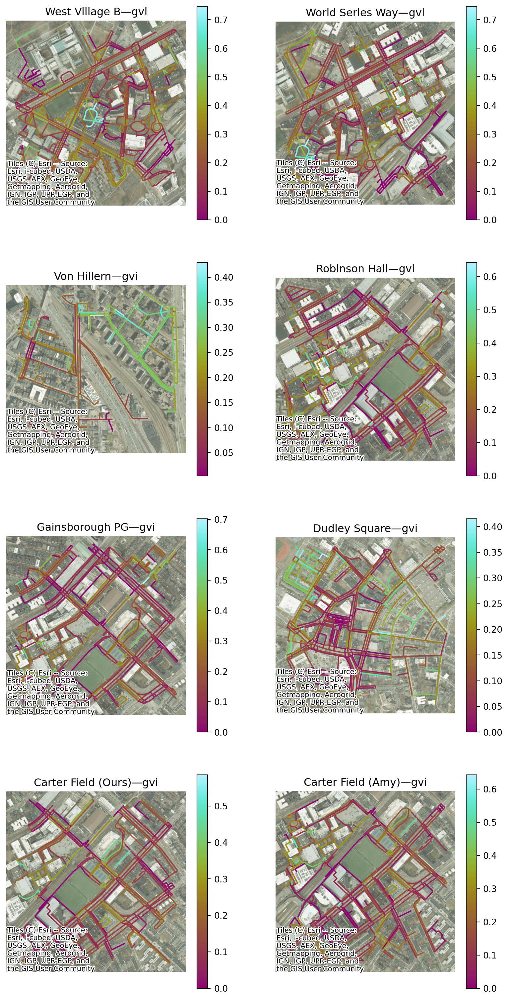

import geopandas as gpd
import cmcrameri.cm as cmc
import matplotlib.pyplot as plt
import contextily as cx
WEST_VILLAGE_B_PATH = "/Users/legariapena.j/Documents/open-sensing-analysis/open-sensing-analysis/data/2026_09_17_create_epa_vectors_for_inference/tagged_networks/West_Village_B.geojson"
WORLD_SERIES_WAY_PATH = "/Users/legariapena.j/Documents/open-sensing-analysis/open-sensing-analysis/data/2026_09_17_create_epa_vectors_for_inference/tagged_networks/World_Series_Way.geojson"
VON_HILLERN_PATH = "/Users/legariapena.j/Documents/open-sensing-analysis/open-sensing-analysis/data/2026_09_17_create_epa_vectors_for_inference/tagged_networks/VON_HILLERN_ST.geojson"
ROBINSON_HALL_PATH = "/Users/legariapena.j/Documents/open-sensing-analysis/open-sensing-analysis/data/2026_09_17_create_epa_vectors_for_inference/tagged_networks/Robinson_Hall.geojson"
GAINSBOROUGH_PATH = "/Users/legariapena.j/Documents/open-sensing-analysis/open-sensing-analysis/data/2026_09_17_create_epa_vectors_for_inference/tagged_networks/Gainsborough_Parking_Garage.geojson"
DUDLEY_SQUARE_PATH = "/Users/legariapena.j/Documents/open-sensing-analysis/open-sensing-analysis/data/2026_09_17_create_epa_vectors_for_inference/tagged_networks/DUDLEY_SQUARE_ROXBURY.geojson"
CARTER_FIELD_OURS_PATH = "/Users/legariapena.j/Documents/open-sensing-analysis/open-sensing-analysis/data/2026_09_17_create_epa_vectors_for_inference/tagged_networks/Carter_Field.geojson"
CARTER_FIELD_AMY_PATH = "/Users/legariapena.j/Documents/open-sensing-analysis/open-sensing-analysis/data/2026_09_17_create_epa_vectors_for_inference/tagged_networks/Carter_Field_—_2.geojson"
gdf_west_village_b = gpd.read_file(WEST_VILLAGE_B_PATH)
gdf_world_series_way = gpd.read_file(WORLD_SERIES_WAY_PATH)
gdf_von_hillern = gpd.read_file(VON_HILLERN_PATH)
gdf_robinson_hall = gpd.read_file(ROBINSON_HALL_PATH)
gdf_gainsborough = gpd.read_file(GAINSBOROUGH_PATH)
gdf_dudley_square = gpd.read_file(DUDLEY_SQUARE_PATH)
gdf_carter_field_ours = gpd.read_file(CARTER_FIELD_OURS_PATH)
gdf_carter_field_amy = gpd.read_file(CARTER_FIELD_AMY_PATH)
street_network_dictionary = {
"West Village B": gdf_west_village_b,
"World Series Way":gdf_world_series_way,
"Von Hillern": gdf_von_hillern,
"Robinson Hall": gdf_robinson_hall,
"Gainsborough PG": gdf_gainsborough,
"Dudley Square": gdf_dudley_square,
"Carter Field (Ours)": gdf_carter_field_ours,
"Carter Field (Amy)": gdf_carter_field_amy
}
COLUMN_NAME = "gvi"
fig, ax = plt.subplots(4, 2, figsize = (10, 20))
axis_flat = ax.flat
for ax, (sensor_name, gdf) in zip(axis_flat, street_network_dictionary.items()):
gdf.plot(ax = ax, column = COLUMN_NAME, cmap = cmc.hawaii, legend = True)
ax.set_title(sensor_name+"—"+COLUMN_NAME)
ax.set_axis_off()
cx.add_basemap(ax, crs = gdf.crs, source=cx.providers.Esri.WorldImagery, alpha = 0.7)